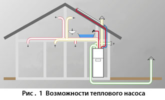
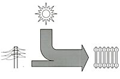
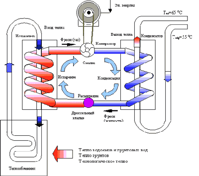
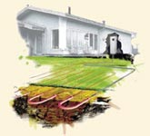
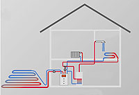
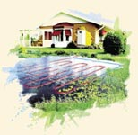
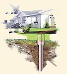
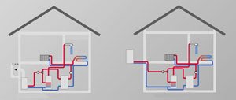

Об экономичности тепловых насосов

Тепловые насосы
Тепловые насосы — энергосберегающее отопительное оборудование
По
прогнозам Мирового Энергетического комитета (МИРЭК), к 2020 г. в
развитых странах мира теплоснабжение будет осуществляться с
помощью тепловых насосов. Тепловой насос использует тепло,
рассеянное в окружающей среде: в земле, воде, воздухе (его
специалисты называют низко-потенциальным теплом.) Затратив 1 кВт
электроэнергии в приводе насоса, можно получить 3-4 кВт тепловой
энергии.        
Тепловые насосы применяют, чтобы отапливать дома, готовить
горячую воду, охлаждать или осушать воздух в комнатах,
вентилировать помещения.
В США, Японии, Германии, Швеции, Швейцарии, Австрии, Финляндии
такие установки внедряются просто скоростными темпами.
Основные достоинства тепловых насосов:
1) Экономичность. Тепловой насос использует введенную в него
энергию на голову эффективнее любых котлов, сжигающих топливо.
Величина КПД у него много больше единицы. Между собой тепловые
насосы сравнивают по особой величине - коэффициенту
преобразования тепла (?), среди других его названий встречаются
коэффициенты трансформации тепла, мощности, преобразования
температур. Он показывает отношение получаемого тепла к
затраченной энергии. К примеру, ? = 3,5 означает, что, подведя к
машине 1 кВт, на выходе мы получим 3,5 кВт тепловой мощности, то
есть 2,5 кВт природа предлагает нам безвозмездно. В среднем
60-75% потребностей теплоснабжения дома ТН обеспечивает
бесплатно. Цифры настолько завораживающие, что невольно приходит
на ум поговорка о бесплатном сыре. Действительно, первоначальные
затраты на насос и монтаж системы сбора тепла довольно ощутимы и
составляют $ 300-1200 на 1 кВт потребной мощности отопления. Но
капиталовложения окупятся за 4-9 лет только за счет сберегаемого
топлива и электричества. При сложившемся уровне цен на
энергоносители ТН по экономичности уступают пока только газовым
котлам (хотя подождем окончательной цены на газ…) но заметно
выигрывают у жидкотопливных и электрических. Служат они по 15-20
лет до капремонта. в то время как газовое отопительное
оборудование требует постоянной смены горелок с периодичностью в
3-5 лет (стоимость одной горелки составляет 1000-1500$). Кроме
того, газовое отопительное оборудование требует постоянного
обслуживания, в противном случае оно становится опасным.
Печальная статистика пожаров и несчастных случаев связанных с
газовым и дизельным отопительным оборудованием растет с каждым
днем. В перспективе, в связи с ростом цен на все виды топлива,
их лидерство обеспечено.
2) Повсеместность применения. Источник рассеянного тепла можно
обнаружить в любом уголке планеты. Земля и воздух найдутся и на
самом заброшенном участке, вдали от газовых магистралей и линий
электропередач - везде этот агрегат раздобудет для себя "пищу",
чтобы бесперебойно отапливать ваш дом, не завися от капризов
погоды, поставщиков дизельного топлива или падения давления газа
в сети. Даже отсутствие нужных 2-3 кВт электрической мощности не
помеха. Для привода компрессора в некоторых моделях используют
дизельные или бензиновые движки.
3) Экологичность. Тепловые насосы не только сэкономит деньги, но
и сбережет здоровье обитателям дома и их наследникам. Агрегат не
сжигает топливо, значит, не образуются вредные окислы типа CO,
СO2, NOх, SO2 , PbO2. Потому вокруг дома на почве нет следов
серной, азотистой, фосфорной кислот и бензольных соединений. Да
и для планеты применение тепловых насосов - благо. Ведь по
большому счету на ТЭЦ сокращается расход топлива на производство
электричества. Применяемые же в тепловых насосах фреоны не
содержат хлоруглеродов и озонобезопасны.
4) Универсальность. Тепловые насосы обладает свойством
обратимости (реверсивности). Он "умеет" отбирать тепло из
воздуха дома, охлаждая его. Летом избыточную энергию иногда
отводят на подогрев бассейна.
5) Безопасность. Эти агрегаты практически взрыво- и
пожаробезопасны. Нет топлива, нет открытого огня, опасных газов
или смесей. Взрываться здесь просто нечему, нельзя также угореть
или отравиться. Ни одна деталь не нагревается до температур,
способных вызвать воспламенение горючих материалов. Остановки
агрегата не приводят к его поломкам или замерзанию жидкостей. В
сущности, тепловой насос опасен не более, чем холодильник.
Как работает тепловой насос?
По сути, Тепловой насос - это слегка преобразованный
холодильник. В обоих есть испаритель, компрессор, конденсатор и
дросселирующее устройство. Цикл работы у холодильника и насоса
абсолютно одинаков, разнятся только параметры настройки. Даже
внешне, по размерам и форме, поразительно похожи друг на друга.
Холодильник работает, выкачивая тепло наружу. Тепловой насос
работает по такому же принципу только наоборот. Он нагнетает
тепло с улицы или же из почвы в Вашу гостиную. В холодильнике
почти не ощущаемое тепло продуктов в конечном итоге выделяется в
виде довольно горячего потока воздуха, отходящего от трубчатой
панели конденсатора ("радиатор" на задней стенке). Поэтому, если
из холодильника вытащить испарительную камеру (с трубами) и
закопать в землю, мы и получим тепловой насос, который будет
обогревать комнату теплым воздухом. А если конденсатор
холодильника омывать водой, то ее, нагретую, можно использовать
в радиаторах отопления или в ванной
Описанная схема работы относится к агрегатам так называемого
парокомпрессионного цикла. Помимо этих машин, существуют также
насосы абсорбционные, термоэлектрические, эжекторные. В бытовых
установках используют в основном парокомпрессионные машины.
Как подобрать тепловой насос?
Успех применения теплового насоса в первую очередь зависит от
того, откуда вы решите черпать низкотемпературное тепло, во
вторую - от способа обогрева вашего дома (водой или воздухом).
Дело в том, что агрегат работает как перевалочная база между
двумя тепловыми контурами: одним, нагревающим, на входе (на
стороне испарителя) и другим, отопительным, на выходе
(конденсатор). По виду теплоносителя во входном и выходном
контурах насоса мы рекомендуем: "грунт-вода", "вода-вода",
"воздух-вода".
Но для всех типов характерен ряд особенностей, о которых полезно
помнить при выборе модели. Во-первых, тепловой насос оправдывает
себя только в хорошо утепленном здании, то есть с теплопотерями
не более 60 Вт/м2. Чем теплее дом, тем больше выгода. Как вы
понимаете, отапливать улицу, собирая на ней же крохи тепла, -
занятие глупое. Во-вторых, чем больше разница температур
теплоносителей во входном и выходном контурах, тем меньше
коэффициент преобразования тепла (?), то есть меньше экономия
электроэнергии. Так уж работают эти устройства, независимо от их
типа. Поэтому более выгодно подключение агрегата к
низкотемпературным системам отопления. Прежде всего, имеется в
виду обогрев от водяных полов или теплым воздухом, так как в
этих случаях теплоноситель по медицинским требованиям не должен
быть горячее 35°С. А вот чем более горячую воду машина готовит
для выходного контура (для радиаторов или душа), тем меньшую
мощность (до 15%) она развивает и тем больше расходует
электричества (до 12%). В-третьих, для достижения большей выгоды
практикуется эксплуатация тепловых насосов в паре с
дополнительным генератором тепла (в таких случаях говорят об
использовании бивалентной схемы отопления).
В доме с большими теплопотерями ставить насос большой мощности
(более 30 кВт) невыгодно. Он громоздок, а будет работать в
полную силу всего лишь около месяца. Ведь количество
действительно холодных дней не превышает 10-15% от длительности
отопительного сезона. Поэтому часто мощность теплового насоса
назначают равной 70-80% от расчетной отопительной. Она будет
покрывать все потребности дома в тепле до тех пор, пока уличная
температура не опустится ниже определенного расчетного уровня
(температуры бивалентности), например минус 5-10°С. С этого
момента в работу включается второй генератор тепла. Есть разные
варианты его использования. Чаще всего таким помощником служит
небольшой электронагреватель, но можно поставить и
жидкотопливный котел. Выбор наилучшего варианта - задача
специалиста.
На рынке можно встретить тепловые насосы фирм IVT, MECMASTER,
THERMIA (все - Швеция), OCHSNER (Австрия), VAILLANT, VIESSMANN,
STIEBEL ELTRON (все - Германия), CLIMAVENETA (Италия), CARRIER,
AERTEC (обе - США), PZP KOMPLET, G-MAR (обе - Чехия).Есть и
производства России - "ЭКИП", "НПФ ТРИТОН", РЗП, "ЭНЕРГИЯ".
Российская продукция простовата по дизайну, но достаточно
надежна и дешевле импортной. Так, модель АВТН-28г ("НПФ ТРИТОН")
нагревает воду в системе отопления до 70°С, и это при хорошей
экономичности (? = 3,3). Фирма "ЭКИП" создала насос ТНСО2-20,
работающий на диоксиде углерода (СО2) - экологически безвредном
хладагенте, который позволяет нагревать воду до рекордной
отметки 85°С при ? = 3,28.
Кроме того, в межсезонье у нас давно используются кондиционеры и
чиллеры с режимом "отопление" от таких известных производителей
холодильной техники, как HITACHI, DAIKIN (обе - Япония), CARRIER,
YORK (обе - США), CLIVET (Италия) и др. Широкий ряд моделей
тепловых насосов с мощностью от 2 до 130 кВт способен
удовлетворить любые запросы обитателей как маленьких дач, так и
больших особняков. Надо только не ошибиться с выбором типа
установки
Установки "грунт-вода"
Грунт - это, пожалуй, наиболее универсальный источник
рассеянного тепла. Он аккумулирует солнечную энергию и круглый
год подогревается от земного ядра. При этом он всегда "под
ногами" и способен отдавать тепло вне зависимости от погоды.
Ведь на глубине уже 5-7 м температура практически постоянна в
течение всего года. Для средней полосы России она составляет
5-8°С. Это очень подходящие условия для работы теплового насоса.
Более того, в верхних слоях земли минимум температуры
достигается на пару месяцев позже пика морозов - нужда в
интенсивном обогреве к этому времени уменьшается. Необходимая
энергия собирается теплообменником, заглубленным в землю, и
аккумулируется в носителе, который затем насосом подается в
испаритель и возвращается обратно за новой порцией тепла. В
качестве такого переносчика энергии используют незамерзающую
экологически безвредную жидкость (ее называют также "рассолом"
или антифризом). Это может быть тридцатипроцентный водный
раствор этиленгликоля или пропиленгликоля. Есть и другая схема
сбора тепла, когда вместо "рассола" в контуре циркулирует фреон,
который превращается в пар прямо в трубах теплосборника.. Но
хотя эта схема повышает КПД, ее эксплуатация сложна. Сегодня
наиболее популярны системы с "рассолом". В них используются два
вида теплообменников: грунтовый коллектор и грунтовый зонд. Оба
выполняются из полиэтиленовых труб диаметром 25, 32 или 40 мм
(чем больше - тем лучше отбор тепла, но и дороже система).
Грунтовые зонды (вертикальные коллекторы)
- это система длинных труб, опускаемых в глубокую
скважину (50-150 м). Здесь нужен всего пятачок земли, зато
требуются дорогостоящие бурильные работы (от $ 20 за 1 пог. м).
На глубине всегда одинаковая температура - около 10°С, поэтому
зонды мощнее горизонтальных коллекторов. Метр их длины
поставляет от 30 до 100 Вт тепловой мощности, в зависимости от
грунта. Известен с десяток разных конструкций зондов, порой
весьма необычных (например, в виде труб, замурованных в сваи
фундамента дома). Но наиболее применимыми являются две: труба в
трубе и U-образная. По одной линии "рассол" подается
циркуляционным насосом вниз, по другой им же поднимается вверх,
к испарителю. В глубоких скважинах сборку всегда защищают
обсадной трубой, в мелких не всегда.
Для улучшения теплопередачи и повышения прочности зонда зазор
между землей или обсадной трубой и рабочими трубами заполняется
бетонитом или бетоном. Если нужно получить большую мощность,
таких теплосборников делают несколько. Расстояния между ними -
5-7 м.
У вертикальных коллекторов, помимо дороговизны, есть еще одно
слабое место, о котором ничего не говорится в фирменных
буклетах. Как показали исследования, равновесие процессов отбора
тепла и восстановления "питающей" способности грунта (вокруг
зонда земля захолаживается) наступает лишь через 4-5 лет
эксплуатации. Поэтому насос в проект надо закладывать помощнее.
Насколько - способны сказать только специалисты.
А вот что действительно может доставить массу хлопот, так это
получение от службы воднадзора разрешения на бурение глубокой
скважины под зонд. Ибо вероятное обмерзание грунта способно
нарушить поведение водоносных слоев. Поэтому для небольших
коттеджей можно закладывать вместо одной глубокой несколько
более мелких (25-35 м) скважин, поскольку на них одобрения
чиновника не требуется.
Установки "вода-вода"
Установки "воздух-вода"